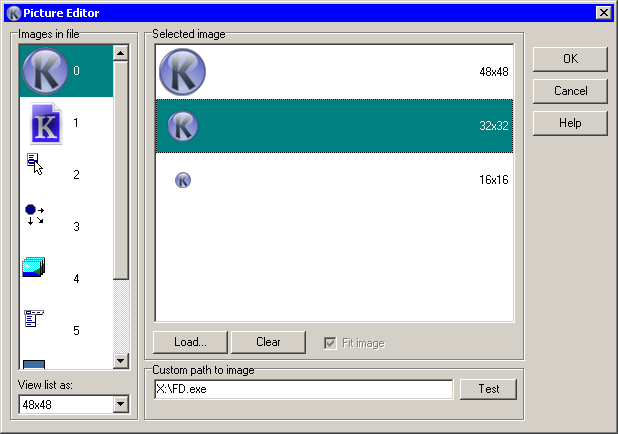

This dialog is split in two parts. On left side there is a list of all icons available in chosen file (if applicable, this can be an icon library, exe, dll, ocx, etc.). Combobox below allow set the view mode of list.
On right side, sits the preview pane for chosen icon or picture. In case of icon, in preview pane you will see subicons available in the icon (with color depth that Autoit will choose when loading). Koda also make a hint, which icon size is used as “small” and “large” icon size (only those icons can be used for Button control). You can choose one - icon of this size will be applied to an Icon or Button control.
In case of picture, in preview pane you will see the picture. Check “Fit image” for see full image.
“Load” button allows to load image. “Clear” button removes image from form.
Custom path to image allow you set image path as it will be in autoit code. Koda understand @WindowsDir, @SystemDir and @TempDir macro and try to find file you typed in PATH. After you type path click the Test button. If Koda expanded typed string successfuly, in label below will shown expanded path to a file and custom path will be saved.